토목기사 (2003-05-25 기출문제)
1과목: 응용역학
1. 다음 그림과 같은 단순보에서 최대 휨모멘트가 발생하는 위치는? (단, A점으로 부터의 거리)
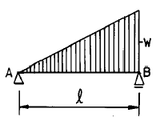
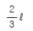
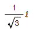
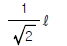
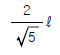
(정답률: 알수없음)

2. 다음 그림과 같은 단면의 A-A 축에 대한 단면 2차 모멘트는?
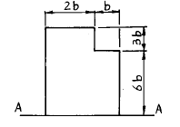
- 558 b4
- 560 b4
- 562 b4
- 564 b4
(정답률: 75%)
3. 다음 보와 같이 이동하중이 작용할때 절대 최대 휨모멘트를 구한값은?
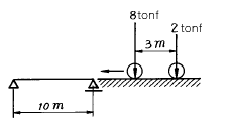
- 18.20 tonf·m
- 22.09 tonf·m
- 26.76 tonf·m
- 32.80 tonf·m
(정답률: 43%)
4. 어떤 보 단면의 전단응력도를 그렸더니 그림과 같았다. 이 단면에 가해진 전단력의 크기는?
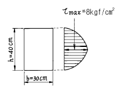
- 9,600 kgf
- 7,200 kgf
- 4,800 kgf
- 6,400 kgf
(정답률: 24%)
5. 단순보에서 그림과 같이 하중 P가 작용할때 보의 중앙점의 단면 하단에 생기는 수직응력의 값으로 옳은 것은? (단, 보의 단면에서 높이는 h이고 폭은 b이다.)
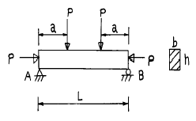
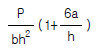
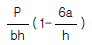
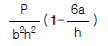
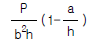
(정답률: 34%)
6. 그림과 같이 단순보의 A단에 MA의 휨모멘트가 작용한다. 보의 단면 2차 모멘트는 절반이 2I이고 나머지 절반이 I 이다. A단 회전각 θA와 B단 회전각 θB의 비 θA/θB 는?
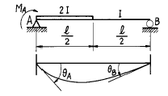
- θA/θB = 0.5
- θA/θB = 1.0
- θA/θB = 1.5
- θA/θB = 2.0
(정답률: 29%)
7. 그림과 같은 4각형 단면의 단주(短柱)에 있어서 핵거리(核距離) e는?
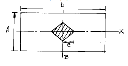
- b/3
- b/6
- h/3
- h/6
(정답률: 40%)
8. 그림과 같이 y 축상 k 점에 편심하중 P 를 받을 때 a 점에 생기는 압축응력의 크기를 구하는 식으로 옳은 것은? (단, Zx, Zy 는 x 축 및 y 축에 대한 단면계수, A는 단면적이다.)
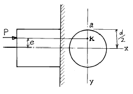
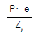
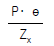
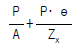
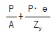
(정답률: 65%)
9. 길이가 3m이고 가로 20cm, 세로 30cm 인 직사각형 단면의 기둥이 있다. 좌굴응력을 구하기 위한 이 기둥의 세장비는?
- 34.6
- 43.3
- 52.0
- 60.7
(정답률: 12%)
10. 탄성계수 E, 전단탄성계수 G, 포와송수 m 사이의 관계가 옳은 것은?
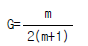
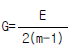
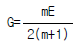
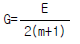
(정답률: 42%)
11. 그림과 같은 보의 지점 A에 10 tonf·m 의 모멘트가 작용하면 B점에 발생하는 모멘트의 크기는?
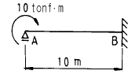
- 1 tonf·m
- 2.5 tonf·m
- 5 tonf·m
- 10 tonf·m
(정답률: 알수없음)
12. 절점 O는 이동하지 않으며, 재단 A,B,C가 고정일 때 Mco는 얼마인가? (단, K는 강비이다.)
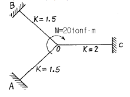
- 2.5 tonf·m
- 3 tonf·m
- 3.5 tonf·m
- 4 tonf·m
(정답률: 48%)
13. 그림과 같은 비대칭 3힌지 아아치에서 힌지 C에 P=20tonf이 수직으로 작용한다. A지점의 수평반력 Rh 는?
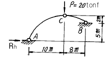
- Rh = 21.⑤ tonf
- Rh = 22.⑤ tonf
- Rh = 23.⑤ tonf
- Rh = 24.⑤ tonf
(정답률: 47%)
14. 균일한 단면을 가진 캔틸레버보의 자유단에 집중하중 P가 작용한다. 보의 길이가 L일 때 자유단의 처짐이 Δ 라면, 처짐이 약 4Δ 가 되려면 보의 길이 L은 몇 배가 되겠는가?
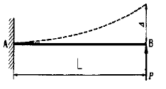
- 1.6배
- 1.8배
- 2.0배
- 2.2배
(정답률: 42%)
15. 다음과 같은 부재에서 길이의 변화량 Δ ℓ 은 얼마인가? (단, 보는 균일하며 단면적A와 탄성계수E는 일정하다고 가정한다.)
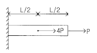
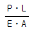
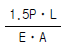
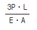
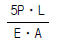
(정답률: 36%)
16. 탄성 변형에너지(Elastic Strain Energy)에 대한 설명중 틀린 것은?
- 변형에너지는 내적인 일이다.
- 외부하중에 의한 일은 변형에너지와 같다.
- 변형에너지는 같은 변형을 일으킬 때 강성도가 크면 적다.
- 하중을 제거하면 회복될 수 있는 에너지이다.
(정답률: 28%)
17. 그림과 같은 구조물에서 부재 AB가 받는 힘의 크기는?
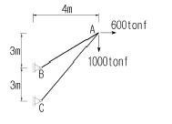
- 3166.7 tonf
- 3274.2 tonf
- 3368.5 tonf
- 3485.4 tonf
(정답률: 40%)
18. 다음 그림과 같은 구조물에서 지점 A에서의 수직반력의 크기는?
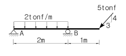
- 0 tonf
- 1 tonf
- 2 tonf
- 3 tonf
(정답률: 알수없음)
19. 다음 구조물의 변형에너지의 크기는?
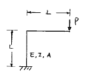
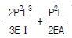
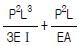
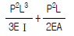
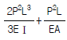
(정답률: 17%)
20. 2경간 연속보의 중앙지점 B 에서의 반력은? (단, E, I는 일정하다.)
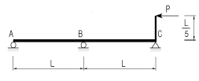
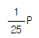
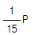
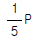
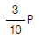
(정답률: 54%)
2과목: 측량학
21. 비행장이나 운동장과 같이 넓은 지형의 정지 공사시에 토량을 계산하고자 할 때 적당한 방법은?
- 점고법
- 등고선법
- 중앙단면법
- 양단면 평균법
(정답률: 48%)
22. 기준면으로부터 지반고를 관측한 결과 다음 그림과 같았다. 정지고를 2.5m로 할 경우 필요한 절성토량은 얼마인가? (단, 각각의 직사각형 면적은 40m2이다.)
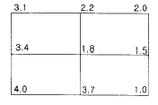
- 110m3
- 220m3
- 2,000m3
- 3,890m3
(정답률: 8%)
23. 단곡선을 설치할 때 곡선반지름 R=250m, 교각 I=16° 23', 곡선시점(B.C)의 추가거리 1,146m일 때 시단현의 편각은? (단, 중심말뚝 간격은 20m)
- 1° 36'15"
- 2° 51'54"
- 1° 15'36"
- 2° 54'51"
(정답률: 27%)
24. 다음은 하천측량에 관한 설명이다. 틀린 것은?
- 수심이 깊고, 유속이 빠른 장소에는 음향 측심기와 수압측정기를 사용한다.
- 1점법에 의한 평균유속은 수면으로부터 수심 0.6H되는 곳의 유속을 말한다.
- 평면 측량의 범위는 유제부에서 제내지의 전부와 제외지의 300m 정도, 무제부에서는 홍수의 영향이 있는 구역을 측량한다.
- 하천 측량은 하천 개수공사나 하천공작물의 계획, 설계, 시공에 필요한 자료를 얻기 위하여 실시한다.
(정답률: 29%)
25. 시거측량에 있어서 협장에 오차가 없고 고저각 α 에 10"의 오차가 있다고 가정하면 수직거리에 생기는 오차는 얼마인가? (단, K=100, C=0, ℓ =1m, α =30° )
- 12mm
- 6mm
- 4.8mm
- 2.4mm
(정답률: 알수없음)
26. 다음 그림과 같이 고저측량을 실시한 경우 D점의 표고는 얼마인가? (단, A점의 표고는 300m이고, B와 C구간은 상호고저측량을 실시했다. A→ B = -0.567m, B→ C = -0.887m C→ B = +0.866m, C→ D = +0.357m)
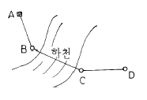
- 298.903m
- 298.914m
- 298.921m
- 298.928m
(정답률: 30%)
27. 항공사진을 도화기를 사용하여 표정을 실시하려고 한다. 사진의 축척, 경사, 방위는 어떠한 표정(標定)을 실시할 때 결정되는가?
- 접속표정(接續標定)
- 절대표정(絶對標定)
- 상호표정(相互標定)
- 내부표정(內部標定)
(정답률: 27%)
28. 삼각측량의 각 삼각점에 있어 모든 각의 관측시 만족되어 야 하는 조건식이 아닌 것은?
- 하나의 측점을 둘러싸고 있는 각의 합은 360° 가 되도록 한다.
- 삼각망 중에서 임의 한변의 길이는 계산의 순서에 관계 없이 동일하도록 한다.
- 삼각망 중 각각 삼각형 내각의 합은 180° 가 되도록 한다.
- 모든 삼각점의 포함면적은 각각 일정해야 한다.
(정답률: 40%)
29. 레벨로부터 60m 떨어진 표척을 시준한 값이 1.258m 이며 이때 기포가 1 눈금 편위되어 있었다. 이것을 바로 잡고 다시 시준하여 1.267m 를 읽었다면 기포의 감도는?
- 25″
- 27″
- 29″
- 31″
(정답률: 알수없음)
30. 다음의 지형측량에서 등고선의 성질을 설명한 것이다. 다음 중 틀린 것은?
- 등고선은 절대 교차하지 않는다.
- 등고선은 지표의 최대 경사선 방향과 직교한다.
- 등고선간의 최단거리의 방향은 그 지표면의 최대경사의 방향을 가리킨다.
- 동일 등고선 상에 있는 모든 점은 같은 높이이다.
(정답률: 67%)
31. 입체시에 대한 설명중 옳지 않은 것은?
- 2매의 사진이 입체감을 나타내기 위해서는 사진축척 이 거의 같고 촬영한 카메라의 광축이 거의 동일 평면 내에 있어야 한다.
- 여색입체사진이 오른쪽은 적색, 왼쪽은 청색으로 인쇄되었을 때 오른쪽에 청색, 왼쪽에 적색의 안경으로 보아야 바른 입체시가 된다.
- 렌즈의 화면거리가 길 때가 짧을 때보다 입체상이 더 높게 보인다.
- 입체시 과정에서 본래의 고저가 반대가 되는 현상을 역입체시라고 한다.
(정답률: 6%)
32. 교점(I.P)은 기점에서 500m의 위치에 있고 교각 I=36°, 현장 ℓ = 20m일 때 외선길이(외할) S.L = 5.00m 이라면 시단현의 길이는 얼마인가?
- 10.43m
- 11.57m
- 12.36m
- 13.25m
(정답률: 36%)
33. 다음중 U.T.M 도법에 대한 설명이다. 옳지 않은 것은?
- 중앙 자오선에서 축척계수는 0.9996이다.
- 좌표계 간격은 경도를 6° 씩, 위도는 8° 씩 나눈다.
- 우리나라는 51 구역(ZONE)과 52 구역(ZONE)에 위치하고 있다.
- 경도의 원점은 중앙자오선에 있으며 위도의 원점은 북위 38° 이다.
(정답률: 43%)
34. 다각측량은 삼각측량에 비해 유리한 장점을 가지고 있다. 다음 중 다각측량의 장점에 대한 설명으로 틀린 것은?
- 2방향만 시준하므로 선점이 용이하고 후속작업이 편리하다.
- 오측하였을 때 재측하기 쉽다.
- 세부측량의 기준점으로 적합하다.
- 측점수가 많을 때 오차 누적이 심해진다.
(정답률: 29%)
35. 천문측량의 목적이 아닌 것은?
- 경위도 원점결정
- 도서지역의 위치결정
- 연직선 편차결정
- 지자기 변화결정
(정답률: 24%)
36. 전자파 거리측정기(EDM)로 경사거리 165.360m(프리즘상수 및 기상보정된 값)을 얻었다. 이때 두점 A, B의 높이는 447.401m, 445.389m 이다. A점의 EDM 높이는 1.417m, B점 의 반사경(reflector) 높이는 1.615m이다. AB의 수평 거리는 몇 m 인가?
- 165.320m
- 165.330m
- 165.340m
- 165.350m
(정답률: 8%)
37. 평지에서 A점에 평판을 세워 B점에 세워 놓은 표척의 상하간격(2m)을 엘리데이드로 시준하여 +4.5, +0.5의 읽음 값을 얻었다. AB간의 거리는?
- 15m
- 25m
- 36m
- 50m
(정답률: 16%)
38. A, B 두점의 좌표가 주어졌을 때 AB의 방위(Bearing)을 구하면 얼마인가? (단, A(101.40, 38.44) B(148.88, 122.31))
- N 29° 30'53"E
- N 60° 29'07"E
- N 29° 30'53"W
- N 60° 29'07"W
(정답률: 34%)
39. 곡선설치에서 교각 I = 60°, 반지름 R = 150m 일 때 접선장(T .L)은?
- 100.0 m
- 86.6 m
- 76.8 m
- 38.6 m
(정답률: 31%)
40. 다음은 캔트(cant)체감법과 완화곡선에 관한 설명이다. 틀린 것은?
- 캔트(cant)체감법에는 직선체감법과 곡선체감법이 있다.
- 클로소이드는 직선체감을 전제로 하여 이것에 대응한 곡률반경을 가진 곡선이다.
- 렘니스케이트는 곡선체감을 전제로 하여 이것에 대응한 곡률반경을 가진 곡선이다.
- 철도는 반파장 sin곡선을 캔트(cant)의 원활체감곡선으로 이용하기도 한다.
(정답률: 36%)
3과목: 수리학 및 수문학
41. 수평으로 관 A와 B가 연결되어 있다. 관 A에서 유속은 2m/s, 관 B에서의 유속은 3m/s 이며, 관 B에서의 유체 압력이 1t/m2 이라 하면 관 A에서의 유체압력은? (단, 에너지 손실은 무시한다.)
- 0.255 t/m2
- 1.255 t/m2
- 2.255 t/m2
- 3.555 t/m2
(정답률: 34%)
42. 직사각형 위어로 유량을 측정하였다. 위어의 수두측정에 2% 의 오차가 발생하였다면 유량에는 몇 %의 오차가 있겠는가?
- 1%
- 1.5%
- 2%
- 3%
(정답률: 36%)
43. 다음 중 유출에 영향을 미치는 인자(因子)가 아닌 것은?
- 유역의 특성
- 유로(流路)의 특성
- 유역의 기후
- 하천 수위
(정답률: 31%)
44. 배수(back water)에 대한 설명 중 옳은 것은?
- 개수로의 어느 곳에 댐업(dam up)이 발생함으로써 수위가 상승되는 영향이 상류(常流) 쪽으로 미치는 현상을 말한다.
- 수자원 개발을 위하여 저수지에 물을 가두어 두었다가 용수 부족시에 사용하는 물을 말한다.
- 홍수시에 제내지(堤內地)에 만든 유수지(遊水池)의 수면이 상승되는 현상을 말한다.
- 관수로 내의 물을 급격히 차단할 경우 관내의 상승 압력으로 인하여 습파(襲波)가 생겨서 상류쪽으로 습파가 전달되는 현상을 말한다.
(정답률: 37%)
45. 두께 3m인 피압대수층에 반지름 1m인 우물에서 양수한 결 과 수면강하 10m일때 정상상태로 되었다. 투수계수 0.3m/hr, 영향권 반지름 400m라면 이때의 양수율은?
- 2.6 ×10-3m3/s
- 6.0 ×10-3m3/s
- 9.4 m3/s
- 21.6 m3/s
(정답률: 43%)
46. 다음 중 유역에 대한 용어의 정의로 틀린 것은?
- 유역평균폭 = 유역면적 / 유로연장
- 유역형상계수 = 유역면적 / (유로연장)2
- 하천밀도 = 유역면적 / 본류와 지류의 총길이
- 하상계수 = 최대유량 / 최소유량
(정답률: 9%)
47. 수문곡선 중 기저시간(基底時間:time base)의 정의로 가장 옳은 것은?
- 수문곡선의 상승시점에서 첨두까지의 시간폭
- 강우중심에서 첨두까지의 시간폭
- 유출구에서 유역의 수리학적으로 가장 먼 지점의 물입자가 유출구까지 유하하는 데 소요되는 시간
- 직접유출이 시작되는 시간에서 끝나는 시간까지의 시간폭
(정답률: 25%)
48. 한계수심에 대한 설명으로 틀린 것은?
- 일정한 유량이 흐를 때 최소의 비에너지를 갖게 하는 수심
- 일정한 비에너지 아래서 최소유량을 흐르게 하는 수심
- 흐름의 속도가 장파의 전파속도와 같은 흐름의 수심
- 일정한 유량이 흐를 때 비력을 최소로 하는 수심
(정답률: 62%)
49. 다음은 개수로 흐름의 운동량 방정식을 나타낸 것이다. 각 항들의 물리적 의미가 올바르지 못한 것은?
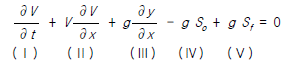
- Ⅰ항 : 대류 가속(convective acceleration)항
- Ⅲ항 : 수심변화에 따른 압력 변화
- Ⅰ항 및 Ⅱ항 : 흐름의 관성항
- Ⅳ항 : 흐름에 대한 중력의 영향
(정답률: 19%)
50. 에너지 보정계수(α )와 운동량 보정계수(β )에 대한 설명 중 틀린 것은?
- 흐름이 이상유체일 때, α 와 β 는 각각 1.5이다.
- 균일 유속분포일 때는 α = β = 1이다.
- 흐름이 실제유체일 때 α 와 β 는 각각 1보다 크다.
- α ,β 값은 흐름이 난류일 때 보다 층류일 때가 크다.
(정답률: 40%)
51. 수로경사
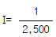
, 조도계수 n = 0.013의 수로에 아래 그림과 같이 물이 흐르고 있다. 평균유속은 얼마인가? (단, 매닝(Manning)의 공식에 의해 풀 것.)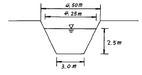
- 3.16m/s
- 2.65m/s
- 2.16m/s
- 1.65m/s
(정답률: 20%)
52. 도수(hy draulic jump)에서 상하류 수심의 관계식은?
- Bernoulli공식으로부터 유도할 수 있다.
- 위어법칙으로부터 유도할 수 있다.
- 운동량 방정식으로부터 유도할 수 있다.
- 상사법칙에 의하여 유도할 수 있다.
(정답률: 29%)
53. 물에 잠긴 파이프 출구에서의 수두 손실은? (단,V = 속도, g = 중력 가속도)
(정답률: 22%)
54. 용적이 4m3인 유체의 중량이 4.2t이면 유체의 밀도(ρ )와 비중(S)은?
- 가
- 나
- 다
- 라
(정답률: 34%)
55. 정수면의 수심(H)에 폭 8m의 사각형판으로 물을 수직으로 가로막았을 때 이 수직판에 작용하는 전수압은 100t이었다. 수심(H)은 얼마인가?
- H = 3m
- H = 4m
- H = 5m
- H = 6m
(정답률: 53%)
56. 우물의 종류를 설명한 것으로 옳지 않은 것은?
- 굴착정이란 불투수층을 뚫고 내려가서 피압대수층의 물을 양수하는 우물이다.
- 깊은우물은 불투수층까지 파내려간 우물이다.
- 얕은우물은 불투수층까지 파내려가지 않은 우물이다.
- 집수암거는 얕은우물 보다는 깊은 우물에 가깝다.
(정답률: 10%)
57. 안지름(內經) 2m의 관내를 20℃의 물이 흐를 때 동점성 계수가 0.0101cm2/s이고 속도가 50㎝/s라면 이 때의 레이놀즈수(Reymolds number)는?
- 960,000
- 970,000
- 980,000
- 990,000
(정답률: 60%)
58. 면적 평균 우량 계산법에 관한 설명중 맞는 것은?
- 관측소의 수가 적은 산악지역에는 산술평균법이 적합하다.
- 티센망이나 등우선도 작성에 유역 밖의 관측소는 고려하지 말아야 한다.
- 등우선도 작성에 지형도가 반드시 필요하다.
- 티센 가중법은 관측소간의 우량변화를 선형으로 단순화한 것이다.
(정답률: 50%)
59. 다음 표와같이 40분간 집중호우가 계속되었다면 지속기간 20분인 최대강우 강도는?
- I = 49㎜/hr
- I = 59㎜/hr
- I = 69㎜/hr
- I = 72㎜/hr
(정답률: 알수없음)
60. 원관내의 층류에서 유량에 대한 설명으로 옳은 것은?
- 관의 길이에 비례한다.
- 반경의 제곱에 비례한다.
- 압력강하에 반비례한다.
- 점성에 반비례한다.
(정답률: 28%)
4과목: 철근콘크리트 및 강구조
61. 제 4과목: 철근콘크리트 및 강구조 독립확대기초가 기둥의 연직하중 125tonf을 받을 때 정사각형 기초판으로 설계하고자 한다. 경제적인 단면은 다음 중 어느 것인가? (단, 지반의 허용지지력 qa = 20tonf/m2로 하고 기초판의 무게는 무시함)
- 2m × 2m
- 2.5m × 2.5m
- 3m × 3m
- 3.5m × 3.5m
(정답률: 34%)
62. 그림과 같은 단면의 프리스트레스트 콘크리트 보의 균열모멘트는? (단, 프리스트레스 도입시의 콘크리트 압축강도 fci=10,000kgf/cm2, fck=400kgf/cm2, PS강재의 단면적 Ap=10cm2이다. )
- 15.50tonf·m
- 23.30tonf·m
- 28.33tonf·m
- 32.45tonf·m
(정답률: 16%)
63. 그림의 단순지지 보에서 긴장재는 C점에 10cm의 편차에 직선으로 배치되고, 110tonf로 긴장되었다. 보에는 12tonf 집중하중이 C점에 작용한다. 보의 고정하중은 무시할 때 A-C구간에서의 전단력은 얼마인가?
- V = 3.67 tonf (↓ )
- V = 12 tonf (↓ )
- V = 8 tonf (↑ )
- V = 4.33 tonf (↑ )
(정답률: 13%)
64. 철근콘크리트가 성립될 수 있는 기본적인 이유 중 옳지 않은 것은?
- 철근과 콘크리트는 부착이 잘 된다.
- 두 재료의 열팽창 계수가 비슷하다.
- 압축에 약한 콘크리트를 보강하기 위하여 철근을 사용한다.
- 콘크리트는 철근의 부식을 방지한다.
(정답률: 29%)
65. 단철근 직사각형보에서 폭 30cm, 유효깊이 50cm, 인장철 근단면적 17.0cm2일 때 강도해석에 의한 직사각형 압축응력 분포도의 깊이는? (단, fck=200kgf/cm2, fy=3000kgf/cm2)
- 5cm
- 10cm
- 20cm
- 40cm
(정답률: 35%)
66. 철골 압축재의 좌굴 안정성에 대한 설명 중 틀린 것은?
- 좌굴길이가 길수록 유리하다.
- 힌지지지 보다 고정지지가 유리하다.
- 단면2차모멘트 값이 클수록 유리하다.
- 단면2차반지름이 클수록 유리하다.
(정답률: 54%)
67. 프리스트레스의 손실을 초래하는 요인중 포스트텐션 방식에서만 두드러지게 나타나는 것은?
- 마찰
- 콘크리트의 탄성수축
- 콘크리트의 크리이프
- 콘크리트의 건조수축
(정답률: 31%)
68. 피로에 대한 안전성 검토는 철근의 응력범위의 값으로 평가하게 되는데 이때 철근의 응력범위에 대한 설명으로 옳은 것은?
- 충격을 포함한 사용 활하중에 의한 철근의 최대응력 값
- 충격을 포함한 사용 활하중에 의한 철근의 최대응력에서 충격을 포함한 사용 활하중에 의한 철근의 최소 응력을 뺀 값
- 계수하중에 의한 철근의 최대응력 값
- 충격을 포함한 사용 활하중에 의한 철근의 최대응력에서 고정하중에 의한 철근의 응력을 뺀 값
(정답률: 31%)
69. 다음과 같은 대칭 T형보의 유효폭(b)계산에 필요한 사항 으로 틀린 것은?
- 16tf + bw
- 양쪽 슬래브의 중심간 거리
- 보의 경간의 1/4
- (인접보와의 내측거리의 1/2) + bw
(정답률: 59%)
70. 단면에 계수비틀림모멘트 Tu=180tonf·cm가 작용하고 있다. 이 비틀림모멘트에 요구되는 스터럽의 요구단면적을 계산한 값으로 맞는 것은? (단, fck=210kgf/cm2 이고, 횡방향 비틀림 보강철근의 설계기준항복강도(fyv)=3500kgf/cm2, s는 종방향 철근에 나란한 방향의 스터럽 간격, At는 간격 s내의 비틀림에 저항하는 폐쇄스터럽 1가닥의 단면적 이다.)
(정답률: 15%)
71. 단면 40cm × 40cm 인 중심축하중을 받는 기둥(단주)에 4-D25 (Ast= 20.27cm2)의 축방향 철근이 배근되어 있다. 이 기둥의 변형률이 ε = 0.001 에 도달하게 될 때, 축방 향 하중의 크기는 약 얼마인가? (단, 콘크리트의 응력 fc=150kgf/cm2이며, fck=240kgf/cm2, fy=3,000kgf/cm2이다.)
- 178tonf
- 278tonf
- 378tonf
- 478tonf
(정답률: 32%)
72. 그림에 나타난 단철근 직사각형보의 압축측에 지름 5cm인 원형 관(duct)이 있을 경우 공칭 휨강도 Mn을 계산하면? (단, 철근 D25 4본의 단면적은 20.27cm2, fck=280 kgf/cm2, fy=4000 kgf/cm2이고, 중립축은 원형 덕트(duct)밑에 있다.)
- 28.5 tonf·m
- 31.7 tonf·m
- 34.1 tonf·m
- 35.2 tonf·m
(정답률: 23%)
73. 부분 프리스트레싱에 대한 설명 중 바른 것은?
- 구조물에 부분적으로 PSC 부재를 사용하는 방법
- 부재단면의 일부에만 프리스트레스를 도입하는 방법
- 사용하중 작용시 PSC부재 단면의 일부에 인장응력이 생기는 것을 허용하는 방법
- PSC부재 설계시 부재 하단에만 프리스트레스를 주고 부재 상단에는 프리스트레스 하지 않는 방법
(정답률: 50%)
74. 강도 설계법에서 그림과 같은 T형보의 응력 사각형 깊이 a는 얼마인가? (단, b=100cm, bw=48cm, tf=10cm, d=60cm, As=14-D25=70.94cm2, fck=210kgf/cm2, fy=3000kgf/cm2)
- 12 cm
- 13 cm
- 14 cm
- 15 cm
(정답률: 50%)
75. 이형철근의 정착길이 산정시 필요한 보정계수에 대한 설명중 틀린 것은? (단, fsp는 콘크리트의 쪼갬인장강도)
- 상부철근인 경우, 철근배근 위치에 따른 보정계수 1.3을 사용한다.
- 에폭시 도막철근인 경우, 피복두께 및 순간격에 따라 1.2나 2.0의 보정계수를 사용한다.
- fsp가 주어지지 않은 경량콘크리트인 경우, 1.3의 보정계수를 사용한다.
- 에폭시 도막철근이 상부철근인 경우, 보정계수끼리 곱한 값이 1.7보다 클 필요는 없다.
(정답률: 29%)
76. 그림과 같은 1 - PL 180 × 10의 강판을 φ22㎜의 리벳으로 이음할 때 강판의 허용인장력은 얼마인가? (단, fta = 1,500㎏f/cm2)
- 17,500㎏f
- 18,500㎏f
- 19,500㎏f
- 20,500㎏f
(정답률: 20%)
77. 단철근 직사각형보에서 fck=320kgf/cm2 이라면 압축응력의 등가 높이 a=β1· C에서 계수 β1은 얼마인가? (단, C는 압축연단에서 중립축까지의 거리이다.)
- 0.850
- 0.836
- 0.822
- 0.815
(정답률: 23%)
78. 전단철근에 관한 다음 설명중 틀린 것은?
 경우에 수직 스터럽의 간격은0.5d 이하, 또는 60cm이하로 한다.
경우에 수직 스터럽의 간격은0.5d 이하, 또는 60cm이하로 한다. 경우에 수직 스터럽의 간격은0.25d 이하, 또는 30cm이하로 한다.
경우에 수직 스터럽의 간격은0.25d 이하, 또는 30cm이하로 한다. 경우에 휨 인장철근의 전단저항강도를 전간설계에 고려한다.
경우에 휨 인장철근의 전단저항강도를 전간설계에 고려한다.- 전단설계는
 관계식에 기초한다.
관계식에 기초한다.
(정답률: 10%)
79. 옹벽의 토압 및 설계일반에 대한 설명 중 옳지 않은 것은?
- 활동에 대한 저항력은 옹벽에 작용하는 수평력의 1.5배 이상이어야 한다.
- 뒷부벽식 옹벽은 부벽을 직사각형보의 복부로 보고 전면벽과 저판을 연속 슬래브로 보고 설계해야 한다.
- 캔틸레버 옹벽의 전면벽은 저판에 지지된 캔틸레버로 설계할 수 있다.
- 토압의 계산은 토질역학의 원리에 의거하여 필요한 재료특성 계수는 측정을 통해서 정해야 한다.
(정답률: 48%)
80. 단철근 직사각형보를 강도설계법으로 해석할 때 그 철근비 ρ를 0.75ρb(ρb는 균형철근비)이하로 규제하는 주된 이유는?
- 처짐을 감소시키기 위하여
- 철근을 절약하기 위하여
- 철근이 먼저 항복하는 것을 방지하기 위하여
- 압축으로 인한 콘크리트의 취성파괴를 피하기 위하여
(정답률: 45%)
5과목: 토질 및 기초
81. 두께 5m의 흐트러진 점토층이 있다. 이 점토층의 액성 한계가 65%이고 압밀하중을 2kg에서 5kg으로 증가시키려고 한다. 예상압밀 침하량은 ?(단, e=2.0)
- 0.20 m
- 0.26 m
- 0.29 m
- 0.32 m
(정답률: 알수없음)
82. 두께 2㎝의 점토시료에 대한 압밀시험에서 전압밀에 소요 되는 시간이 2시간이었다. 같은 시료조건에서 5m 두께의 지층이 전압밀에 소요되는 기간은 약 몇년인가? (단,기간은 소수 2자리에서 반올림함.)
- 9.3년
- 14.3년
- 12.3년
- 16.3년
(정답률: 20%)
83. 도로의 평판재하 시험이 끝나는 다음 조건 중 옳지 않은 것은?
- 완전히 침하가 멈출 때
- 침하량이 15㎜에 달할 때
- 하중 강도가 그 지반의 항복점을 넘을 때
- 하중 강도가 현장에서 예상되는 최대 접지 압력을 초과할 때
(정답률: 54%)
84. 아래 그림에서 Ａ점 흙의 강도정수가 일때 Ａ점의 전단강도는 ?
- 6.93t/m2
- 7.39t/m2
- 9.93t/m2
- 10.39t/m2
(정답률: 48%)
85. 어느 지반에 30㎝× 30㎝ 재하판을 이용하여 평판재하시험을 한 결과, 항복하중이 5t, 극한하중이 9t이었다. 이 지반의 허용지지력은 다음 중 어느 것인가?
- 55.6 t/m2
- 27.8 t/m2
- 100 t/m2
- 33.3 t/m2
(정답률: 34%)
86. 간극률이 50%, 함수비가 40%인 포화토에 있어서 지반의 분사현상에 대한 안전율이 3.5라고 할 때 이 지반에 허용되는 최대 동수구배는?
- 0.21
- 0.51
- 0.61
- 1.00
(정답률: 27%)
87. Sand drain공법의 지배 영역에 관한 Barron의 정사각형 배치에서 사주(Sand pile)의 간격을 d,유효원의 지름을 de라 할때 de를 구하는 식으로 옳은 것은?
- de = 1.13d
- de = 1.⑤d
- de = 1.03d
- de = 1.50d
(정답률: 알수없음)
88. 지표면이 수평이고 옹벽의 뒷면과 흙과의 마찰각이 0° 인 연직옹벽에서 Coulomb 토압과 Rankine 토압은 어떤 관계가 있는가 ? (단,점착력은 무시한다.)
- Coulomb 토압은 항상 Rankine 토압보다 크다.
- Coulomb 토압과 Rankine 토압은 같다.
- Coulomb 토압이 Rankine 토압보다 작다.
- 옹벽의 형상과 흙의 상태에 따라 클때도 있고 작을때 도 있다.
(정답률: 67%)
89. 최대주응력이 10t/m2, 최소주응력이 4t/m2일 때 최소주응력 면과 45° 를 이루는 평면에 일어나는 수직응력은?
(정답률: 39%)
90. 포화된 점토가 공극비 e = 0.80, 비중 Gs = 2.60일때 건 조단위중량과 포화단위중량은 각각 얼마인가?
- γd = 1.988g/cm3, γsat = 2.018g/cm3
- γd = 1.866g/cm3, γsat = 1.956g/cm3
- γd = 1.444g/cm3, γsat = 1.889g/cm3
- γd = 1.333g/cm3, γsat = 1.666g/cm3
(정답률: 32%)
91. 성토된 하중에 의해 서서히 압밀이 되고 파괴도 완만하게 일어나 간극수압이 발생되지 않거나 측정이 곤란한 경우 실시하는 시험은?
- 압밀 배수 전단시험(CD 시험)
- 비압밀 비배수 전단시험(UU 시험)
- 압밀 비배수 전단시험(CU 시험)
- 급속 전단시험
(정답률: 27%)
92. 그림과 같은 성층토(成層土)의 연직방향의 평균투수계수 kv의 계산식으로서 알맞는 것은? (단, H1,H2,H3診 : 각토층의 두께, k1,k2,k3診 : 각토층의 투수계수)
(정답률: 39%)
93. 연약 점토지반의 개량공법으로서 다음중 적절하지 않은 것은?
- 샌드 드레인 공법
- 페이퍼 드레인 공법
- 프리로딩(Preloading)공법
- 바이브로 플로테이션(Vibrofloatation) 공법
(정답률: 50%)
94. 사면의 안정문제는 보통 사면의 단위 길이를 취하여 2차원 해석을 한다. 이렇게 하는 가장 중요한 이유는?
- 길이 방향의 변형도(Strain)를 무시할수 있다고 보기 때문이다.
- 흙의 특성이 등방성(isotropic)이라고 보기 때문이다
- 길이 방향의 응력도(Stress)를 무시할수 있다고 보기 때문이다.
- 실제 파괴형태가 이와 같기 때문이다.
(정답률: 37%)
95. 굳은 점토지반에 앵커를 그라우팅하여 고정시켰다. 고정부의 길이가 5m, 직경 20cm, 시추공의 직경은 10cm 이었다. 점토의 비배수전단강도Cu = 1.0 kg/cm2, φ = 0o이라 고 할 때 앵커의 극한 지지력은? (단, 표면마찰계수는 0.6으로 가정한다.)
- 9.4ton
- 15.7ton
- 18.8ton
- 31.3ton
(정답률: 28%)
96. 그림과 같이 지표면에 P1 = 100ton의 집중하중이 작용할때 지중 ㅇ점의 집중하중에 의한 수직응력은 얼마인가? (단,영향값 Iσ = 0.2214)
- σ z = 0.10t/m2
- σ z = 0.20t/m2
- σ z = 0.89t/m2
- σ z = 2.00t/m2
(정답률: 22%)
97. 다음 흙의 다짐에 관한것중 틀린 것은?
- 인공적으로 흙에 압력이나 충격을 가하여 밀도를 높이는 것을 다짐이라 한다.
- 최대건조밀도때의 함수비를 최적함수비라 한다.
- 영공기공극 곡선은 흙이 완전포화될때 함수비 - 밀도 곡선을 말한다.
- 다짐에너지를 증가하면 최적함수비는 증가한다.
(정답률: 알수없음)
98. 공극비가 e1 = 0.80인 어떤 모래의 투수계수가 k1 = 8.5 x 10-2㎝/sec일때 이 모래를 다져서 공극비를 e2 = 0.57로하면 투수계수 k2는?
- 8.5 x 10-3㎝/sec
- 3.5 x 10-2㎝/sec
- 8.1 x 10-2㎝/sec
- 4.1 x 10-1㎝/sec
(정답률: 9%)
99. 일축압축시험 결과 흙의 내부 마찰각이 30o로 계산되었다. 파괴면과 수평선이 이루는 각도는?
- 10°
- 20°
- 40°
- 60°
(정답률: 43%)
100. 토질시험결과 No.200체 통과율이 50%, 액성한계가 45%, 소성한계가 25%일 때 군지수는?
- 3
- 5
- 7
- 9
(정답률: 29%)
6과목: 상하수도공학
101. 수격현상(Water Hammer)의 방지책으로 잘못된 것은?
- 펌프의 급정지를 피한다.
- 가능한 한 관내유속을 크게 한다.
- 토출관쪽에 압력조정용수조(surge tank)를 설치한다.
- 토출측 관로에 에어챔버(air chamber)를 설치한다.
(정답률: 50%)
102. 1일 22,000m3을 정수처리하는 정수장에서 고형 황산 알루미늄을 평균 25mg/ℓ 씩 주입할 때 필요한 응집제의 양은 얼마인가?
- 250kg/일
- 320kg/일
- 480kg/일
- 550kg/일
(정답률: 22%)
103. 상수도시설의 수질시험과 관련된 설명으로 옳지 않은 것은?
- 수질시험에는 물리학적, 화학적, 세균학적, 생물학적 검사항목들이 있다.
- 수질검사 장소로는 급수전, 물의 정체가 용이한 곳, 원수 등이 있다.
- 수질기준에 정해준 수질검사 항목은 정해진 기간에 실시해야 하나 일부항목을 생략할 수도 있다.
- 검사항목에 대해서는 수질이 평균치를 나타내는 시기에 매년 1회 이상 실시해야 한다.
(정답률: 17%)
104. 호소의 부영양화에 관한 다음 설명중 틀린 것은?
- 부영양화의 원인물질은 질소와 인 성분이다.
- 부영양화된 호소에서는 조류의 성장이 왕성하여 수심이 깊은 곳까지 용존산소 농도가 높다.
- 조류의 영향으로 물에 맛과 냄새가 발생된다.
- 부영양화는 수심이 낮은 호소에서도 잘 발생된다.
(정답률: 58%)
1⑤. 강우강도 , 면적 2㎢, 유입시간 6분, 유출계수 0.75, 관내유속 1.2m/sec 인 경우 길이가 720m인 하수관에서 배출되는 우수량은 몇 m3/s 인가?
- 6
- 24
- 48
- 60
(정답률: 38%)
106. 다음은 하수관거 역사이폰(inverted sy phon)의 설계에 관한 사항이다. 적합하지 않은 것은?
- 역사이폰 양단부에 설치하는 역사이펀실에는 반드시이 토실을 설치한다.
- 역사이폰 관거는 계획하저면 보다 적어도 1m 이상 깊게 매설한다.
- 고장시를 대비하여 상류부에서 직접 하천으로 방류할 수 있는 설비를 갖추는 것이 좋다.
- 역사이폰내의 유속은 상류 하수관내의 유속보다 작게 한다.
(정답률: 31%)
107. 양수량이 50m3/min 이고 전양정이 8m 일 때 펌프의 축동력은 얼마인가? (단, 펌프의 효율(η )=0.8)
- 65.2 kW
- 73.6 kW
- 81.5 kW
- 92.4 kW
(정답률: 32%)
108. 침사지에서 제거되는 취수한 물 속에 포함된 모래입자의 일반적인 크기와 체류시간으로서 적당한 것은?
- 입자크기 : 0.1~0.2mm, 체류시간 : 10~20초
- 입자크기 : 0.1~0.2mm, 체류시간 : 10~20분
- 입자크기 : 0.04~0.⑤mm, 체류시간 : 10~20초
- 입자크기 : 0.04~0.⑤mm, 체류시간 : 10~20분
(정답률: 38%)
109. 원수의 알카리도 50ppm, 탁도가 500ppm일 때 황산알루미늄의 소비량은 60ppm 이다. 수량이 48,000m3/day일 때 5% 용액의 황산알루미늄은 1일에 얼마나 필요한가? (단, 액체의 비중을 1로 본다.)
- 40.6 m3/day
- 47.6 m3/day
- 50.6 m3/day
- 57.6 m3/day
(정답률: 0%)
110. 하수처리장의 1차 처리시설에서 BOD부하의 40%가 제거되고, 2차 처리시설에서 BOD부하의 90%가 제거되었다면 전체 BOD 제거율은?
- 78%
- 89%
- 94%
- 96%
(정답률: 40%)
111. Hardy-Cross 방법에 의해 상수 배수관망을 해석할 때에 각 폐합관의 마찰손실수두 h의 산정식은? (단, Q 는 유량, k는 상수)
- Hazen-Williams 식 사용시 h = kQ1.85
- Hazen-Williams 식 사용시 h = kQ3
- Darcy-Weisbach 식 사용시 h = kQ1.85
- Darcy-Weisbach 식 사용시 h = kQ3
(정답률: 38%)
112. 다음 급수량에 관한 설명중 옳지 않은 것은?
- 계획 1일 최대급수량 = 계획 1인 1일 최대급수량 × 계획급수인구
- 계획 1일 평균급수량(대도시) = 계획 1일 최대급수량 × 0.5
- 1인 1일 평균급수량 = 1년간 총급수량 / (급수인구 × 365일)
- 1인 1시간 평균급수량 = 1일 평균급수량 / 24시간
(정답률: 46%)
113. 다음 설명중 맞지 않는 것은 어느 것인가?
- 강우강도는 어느 지점에서 1시간내에 내린 비의 양을 깊이로 나타낸 것이다.
- 유출계수는 배수구역 내로 내린 강우량에 대하여 증발과 지하로 침투하는 양의 비율이다.
- 유입시간은 우수가 배수구역의 가장 원거리 지점으로부터 하수관거로 유입하기 까지의 시간이다.
- 유하시간은 하수관거로 유입한 우수가 하수관 길이 L을 흘러가는데 필요한 시간이다.
(정답률: 28%)
114. 관거의 접합 방법 중에서 관의 매설깊이가 얕게 되어서 공사비가 적어지고, 펌프의 배수에도 유리한 방법은?
- 수면접합
- 관정접합
- 관중심접합
- 관저접합
(정답률: 56%)
115. 하수도 시설에 손상을 주지 않도록 하기 위하여 설치되는 전처리(primary treatment)공정을 필요로 하지 않는 폐수는?
- 대형 부유물질만을 함유하는 폐수
- 아주 미세한 부유물질만을 함유하는 폐수
- 침전성 물질을 다량으로 함유하는 폐수
- 산성 또는 알카리성이 강한 폐수
(정답률: 60%)
116. 상수도의 배수관 설계시에 사용하는 계획급수량은?
- 평균급수량
- 최대급수량
- 시간최대급수량
- 시간평균급수량
(정답률: 34%)
117. 이차침전지의 계획1일최대오수량에 대한 표면부하율로 옳은 것은?
- 0.2~0.3m3/m2.일
- 2~3m3/m2.일
- 20~30m3/m2.일
- 200~300m3/m2.일
(정답률: 34%)
118. 하수의 배제방식에서 합류식과 분류식에 대한 설명 중 잘못된 것은?
- 분류식은 합류식에 비해 유량의 변동이 크다.
- 합류관거는 계획우수량에 대하여 유속을 0.8m/sec 이상으로 한다.
- 합류식은 분류식에 비해 관의 단면적이 커진다.
- 합류식은 초기강우의 오염물질을 처리장으로 수송할수 있다.
(정답률: 39%)
119. 활성슬러지 공법에서 슬러지 팽화(bulking)의 원인으로 적절하지 못한 것은?
- MLSS의 농도 증가
- 슬러지 배출량의 조절 불량
- 유입하수량 및 수질의 과도한 변동
- 부적절한 온도, 질소 혹은 인의 결핍
(정답률: 37%)
120. 다음중 침사지의 침사현상을 가장 잘 설명할 수 있는 것은?
- 독립침전
- 지역침전
- 압밀침전
- 응집침전
(정답률: 19%)